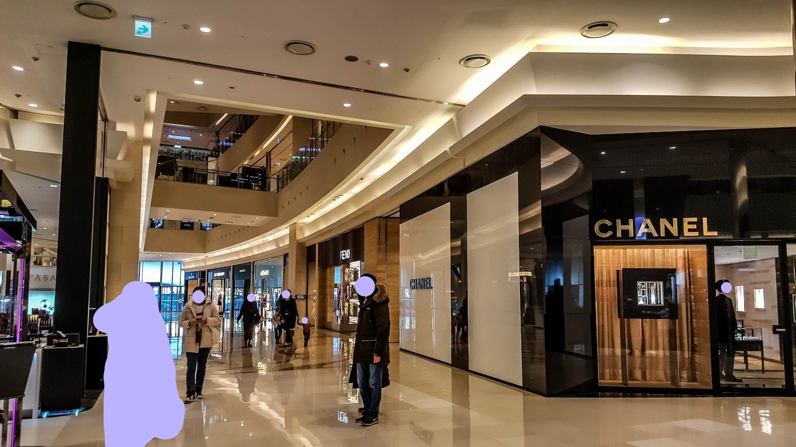

Busan · Shopping
Shop Lululemon at Shinsegae Centum City in Busan
By Korea Plainly · Published

In brief: lululemon Busan Shinsegae Centum City is a convenient stop for visitors looking for the brand’s athletic and everyday activewear inside Shinsegae Centum City Mall. The supplied address places it on the mall’s first floor at 15 Centum 4-ro, Haeundae-gu. Check the store’s official listing or Google Maps before visiting to confirm current details.
Google listing: 4.4/5 from 15,663 reviews. This is the rating and review count shown in the supplied Google Maps information; check the listing for the latest status.
Visiting lululemon Busan Shinsegae Centum City
- Region
- Busan
- Google rating
- 4.4/5 from 15,663 reviews (October 2026)
Opening hours, prices and closures change. Check the map before you go.
What to expect
This location brings lululemon into one of Busan’s best-known large shopping complexes. It can suit travellers who want to browse activewear during a wider shopping day, or who need a practical clothing stop while staying in the Haeundae area. The store’s exact assortment can change, so treat it as a place to check for current products rather than assuming a particular item, colour or size will be available.
Lululemon is known internationally for clothing and accessories designed for activities such as yoga, running and training, alongside casual pieces. If you are shopping for a specific use, think about what matters most before you arrive: fabric feel, support, fit, layering or ease of care. Staff can help you find products in store, but availability is not guaranteed. For a particular item, consult the official store page or contact the store through the channels listed there, if available.
Trying items on can be especially useful if this is your first time buying the brand. Sizing and fit may differ from what you are used to, and the same size can feel different across styles. If you are between sizes or shopping for a technical garment, compare the fit in person and check the product label or official product information for care instructions.
Finding the store
The supplied address is 1F, Shinsegae Centum City Mall, 15 Centum 4-ro, Haeundae-gu, Busan. Because large malls can have multiple entrances, wings and directory labels, use the mall’s internal signs once you are inside. If your map pin and the directory seem to show different locations, confirm the current store position with the mall information desk or the official lululemon store listing.
For a smoother visit, save the Google Maps link before setting out and check its current directions from your starting point. The official store page is also useful for confirming that the location is operating and checking any store-specific information published there. Mall layouts and retail tenants can change, so a quick check on the day is worthwhile.
Making the most of your visit
Allow time to browse rather than planning around a single product. A visit can be combined with other shopping in Shinsegae Centum City, but the mall is large; having the store name and floor information ready can make it easier to navigate. If you are travelling with a shopping list, note the product name, colour and size beforehand. That gives staff a clearer starting point if you need help checking what is available.
International visitors may also want to ask about payment options, return or exchange conditions, and any tax-refund arrangements before completing a purchase. These policies can depend on current rules and the transaction, so do not assume that a particular service is available. Keep your receipt and packaging until you are certain you will keep the item, and check the conditions printed on the receipt or provided by the store.
Good to know
- Address: 1F, Shinsegae Centum City Mall, 15 Centum 4-ro, Haeundae-gu, Busan.
- Opening hours: Not included here because hours can change. Check the official store page or mall information before visiting.
- Stock: Product selection and sizes vary; verify availability if you have a specific item in mind.
- Navigation: Use the map pin, then follow the mall’s current directory signs to the store.
- Reviews: The supplied Google listing shows 4.4/5 from 15,663 reviews. Read recent comments for visitor context, while remembering that reviews may concern the wider listing or shopping complex.
Useful links
FAQ
Where is lululemon Busan Shinsegae Centum City?
It is listed at 1F, Shinsegae Centum City Mall, 15 Centum 4-ro, Haeundae-gu, Busan. Confirm the floor and location using the mall directory or official store page before setting out.
Can I rely on the store having a particular size or product?
No. Stock changes, and a specific style, colour or size may not be available. Check with the store through its official listing if you are making a special trip.
Are the opening hours listed here?
No. Check the official store page or mall information for current hours, as schedules may change.